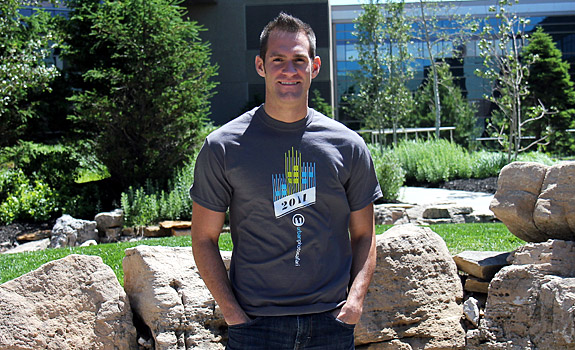
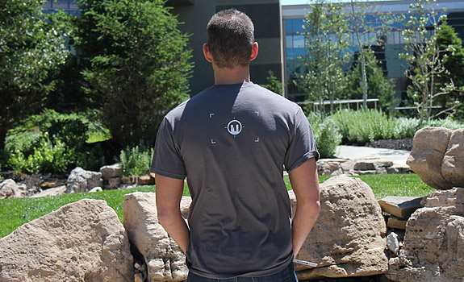

Created by the talented crew at Indicia Design, the official 2011 T-shirt is here! We’ll be selling them at the event for $15 (cash only). Of course, if you know me and can get a hold of me pre-event, I might be able to arrange getting you one. There are a limited amount so first come first serve. Can’t wait to see all of you there this Saturday!
